How this game is built
Pyrefly Reprise, exploded
One finished frame · 9 components
377 pieces in the whole game
Find a layer, painting or cue/
3/4
Front
Side
Labels
Closer
Further
Reset
Full
377pieces, laid flat, largest first
used in Chapter II×5five painted poses in one tile
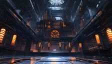
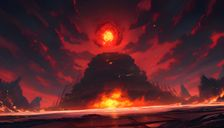
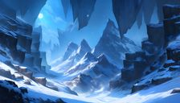
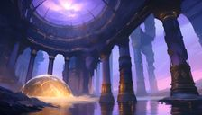
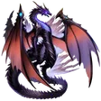
×3

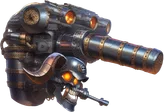
×5×5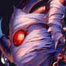
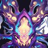
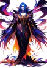
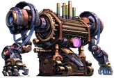
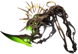
×5×3×5×3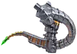
×3×7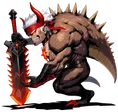
×5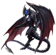
×3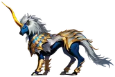
×3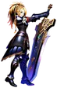
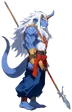
×8×5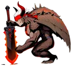
×5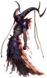
×3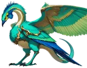
×3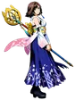
×8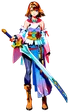
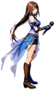
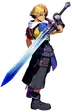
×7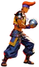
×7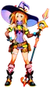
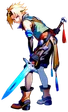
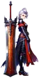
×8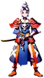
×7×3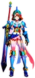
×7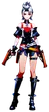
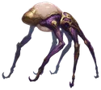
×5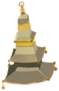
×5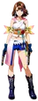
×3×6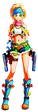
SlabAction bannerCommand stackTurn listParty statusTarget bracketDamage numeralGrain + vignettebattle-ffxboss-dreadboss-ffx2-aeonboss-jechtboss-seymourboss-shuyinboss-vegnagunboss-yu-yevonboss-yunalescachapter-selectending-ffxending-ffx2pausescene-bevelle-undergroundscene-dreams-endscene-farplanescene-gagazetscene-zanarkand-dometitlevictory-ffxvictory-ffx2Spell sounds×50UI sounds×28Flourish sounds×20Weapon sounds×14Ambience sounds×12Impact sounds×10Boss billboard · 03Yunalesca, first form5 painted poses: idle, attack, cast, hurt, ko.
public/art/characters/yunalesca-1/Pull it apartEvery piece214 paintings, 155 sound cues, 8 HUD parts
100%
Reset
Assembledlayers apartEvery piece
Labels
Drag to panScroll to zoomClick a piece to open it
Concept · option C · FFX
Unofficial fan tribute · sources & credits